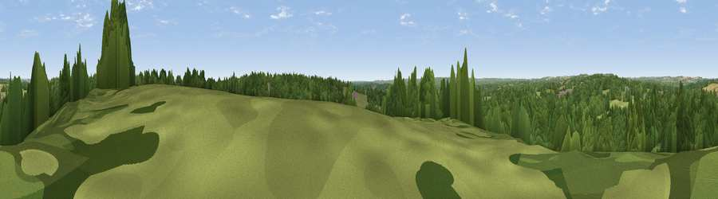

Viewpoint near Awbridge
#35885 in England · top 53% of its area beats it · near AwbridgeThe view, rendered

A 360° render of this exact spot computed from the terrain model, tree cover and land cover — summer colours, afternoon light, calibrated against photographs of famous viewpoints. Real trees, hedges and buildings will differ in detail.
The panorama
Grey silhouette: terrain skyline in each direction (720 bearings, Earth curvature and refraction included). Dashed green: skyline with trees (+15 m) and buildings (+8 m) as obstacles. Blue strip: how far the ground is visible on each bearing.
Where the view opens
Wedge length = distance to the farthest visible ground on that bearing (vegetation-aware). Rings at 10, 25 and 50 km.
What fills the view
57% woodland · 36% grassland · 5% cropland · 2% built-up
Angular shares of the visible panorama (visual magnitude), not map area. Landscape diversity 0.39 (0–1 Shannon).
Key numbers
More beautiful places nearby
The staircase of upgrades: each row has a higher view potential than everything closer. Driving times are estimates from straight-line distance, calibrated against real road routing — check an actual route before setting out.
| Place | Direction | Drive | Score |
|---|---|---|---|
| Cadbury Hill | N · 4 km | ~10 min | 40.1 |
| Viewpoint near West Dean | WNW · 6 km | ~12 min | 53.1 |
| Viewpoint near West Dean | WNW · 6 km | ~13 min | 57.9 |
| Dean Hill | WNW · 7 km | ~15 min | 59.6 |
| Viewpoint near Broughton | NNW · 10 km | ~20 min | 60.5 |
| Viewpoint near King's Somborne | NE · 10 km | ~20 min | 61.3 |
| Viewpoint near West Grimstead | W · 11 km | ~20 min | 62.7 |
| Viewpoint near Sparsholt | ENE · 11 km | ~21 min | 66.9 |
51.00622, -1.55562 · source: screening · position refined by local search. Computed location — check access rights before visiting.